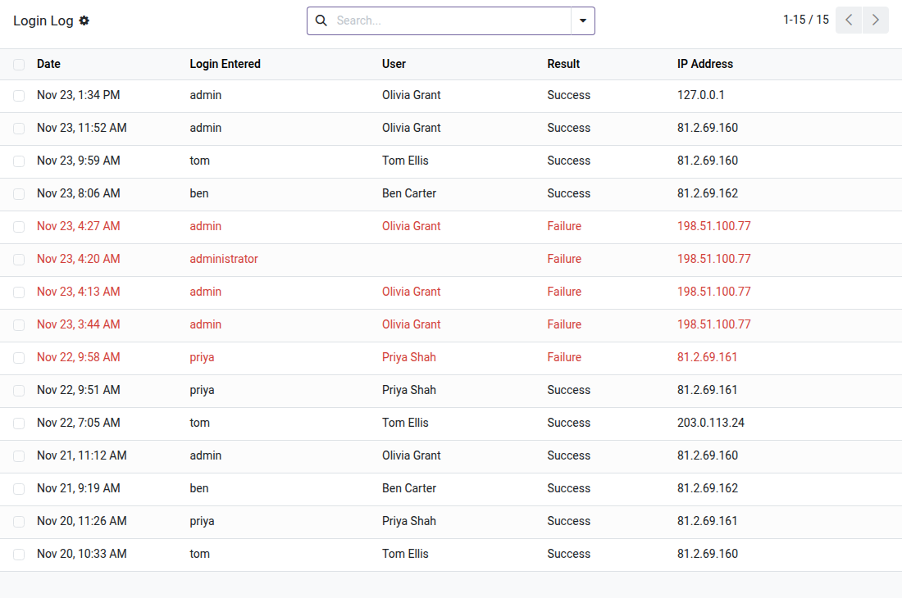

Login Log
Every login and every failure, with its username, IP address and date.
Odoo keeps the date of the last login, and nothing else. Failed attempts go to the server log file — which nobody opens, which requires system access, and which disappears on rotation. A burst of attempts on an administrator account can therefore go unnoticed until one succeeds.
What it brings
- 🔐 Successes and failures — both, in the same log, viewable from the interface.
- 🌐 The address people log in from — visible on every line, and groupable.
- ❓ Even unknown usernames — an attempt on a non-existent account is recorded with the username entered, with no linked user.
- 💾 Failures are never lost — they are written in a transaction of their own. A record written in the refused login's transaction would disappear along with it.
- 🚪 Never at the cost of a login — if the log breaks down, the incident goes to the server log and authentication carries on.
Real screenshots
1. Every login attempt, failed ones included
Successes and failures with the username typed and the IP address. Four refused attempts in a row from the same address stand out in red, one of them on a username that does not exist.

Why adopt it
- The log is restricted to administrators: it contains the usernames entered, which are sometimes passwords typed into the wrong field.
- No configuration: the module starts logging as soon as it is installed.
- Open source module, LGPL-3 license — no subscription, no external dependency.
Going further
Knowing who gets in is a start; deciding what each person sees once inside comes next. The OdooSkills range includes some fifteen segregation modules — by sales team, by department, by project, by accounting journal, by warehouse. Full catalog: apps.odooskills.com.
LGPL-3 license — compatible with Odoo 19.0 Community and Enterprise. Support : apps@odooskills.com.